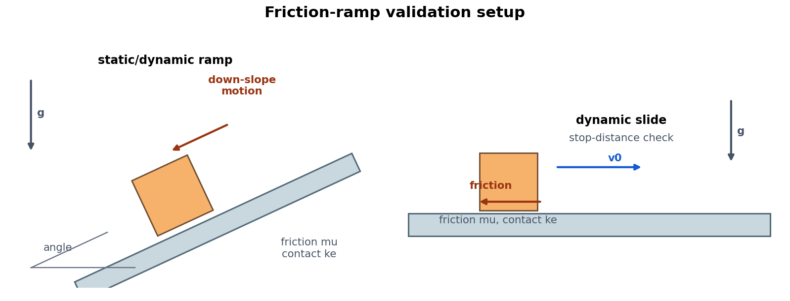
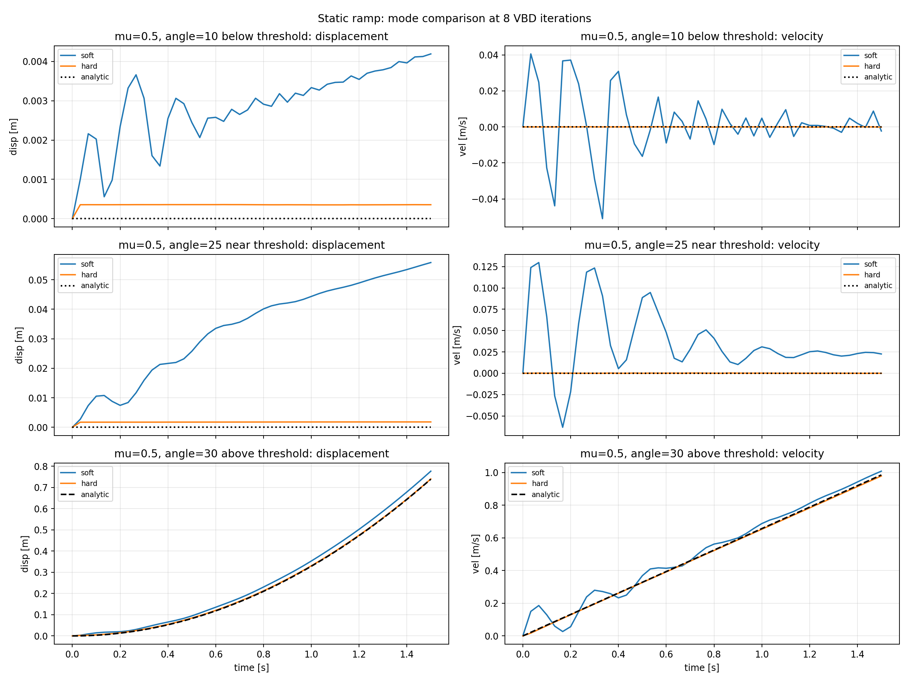
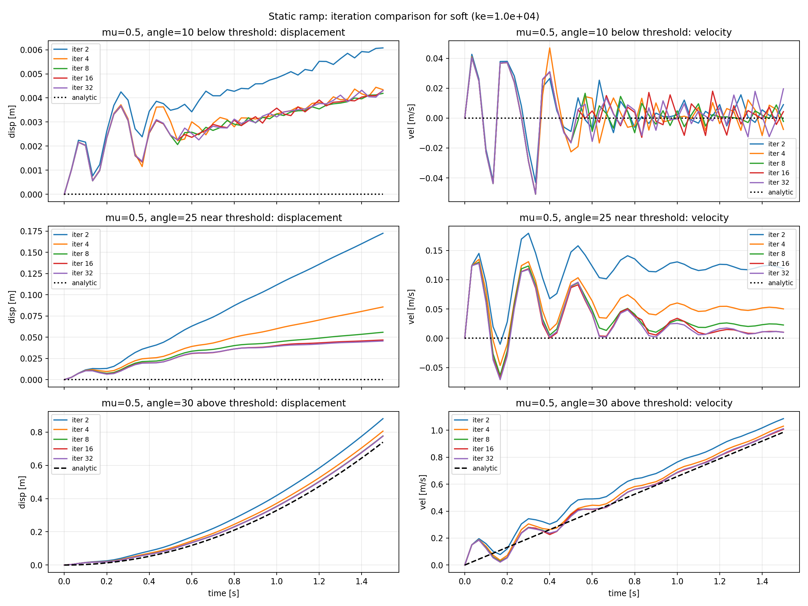
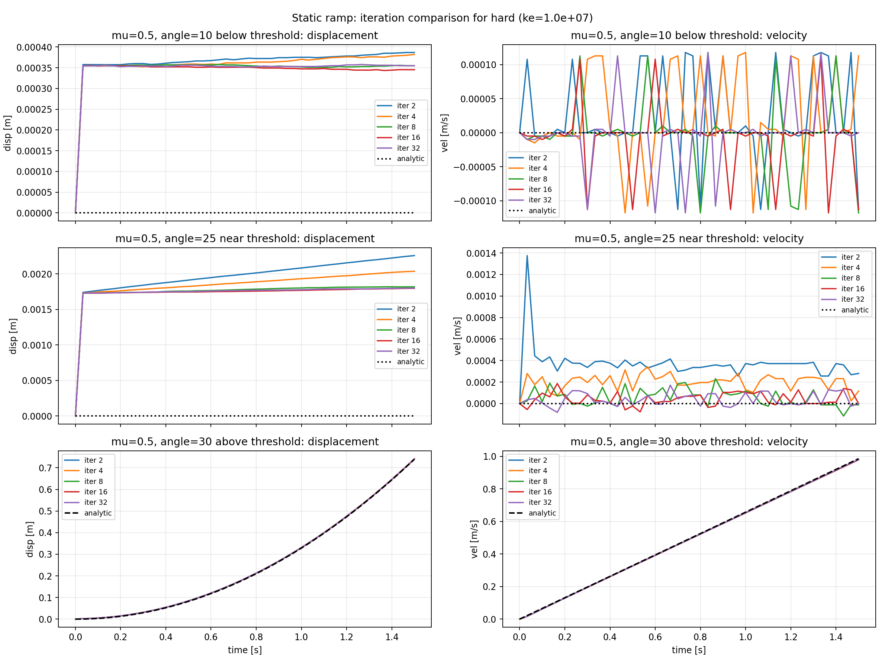
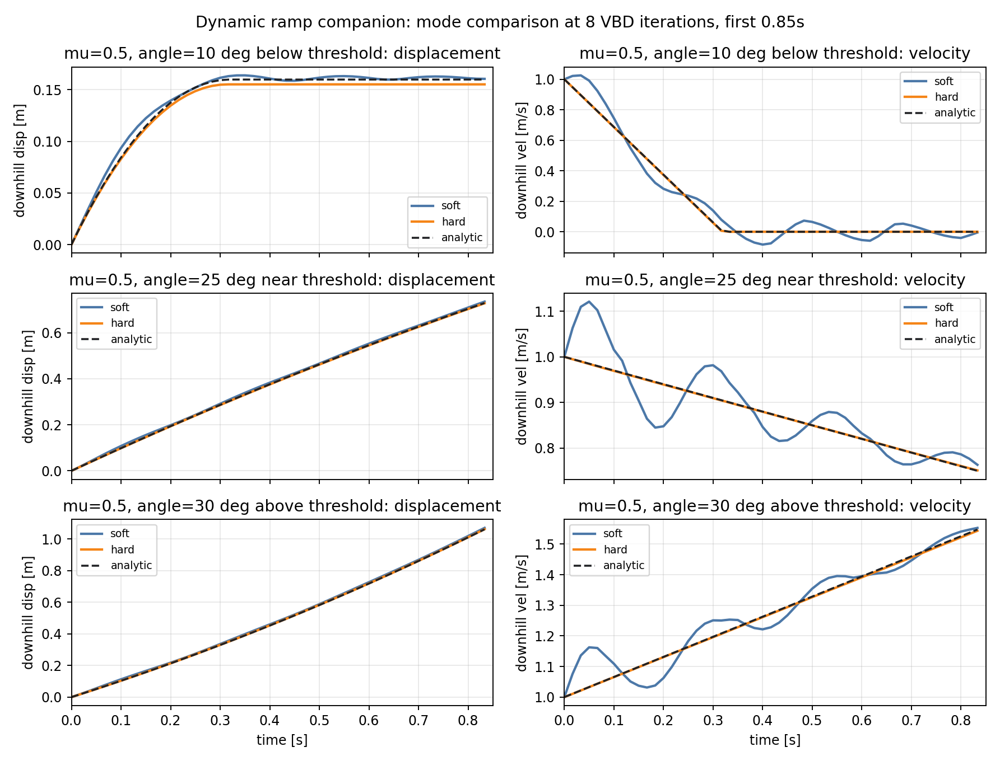
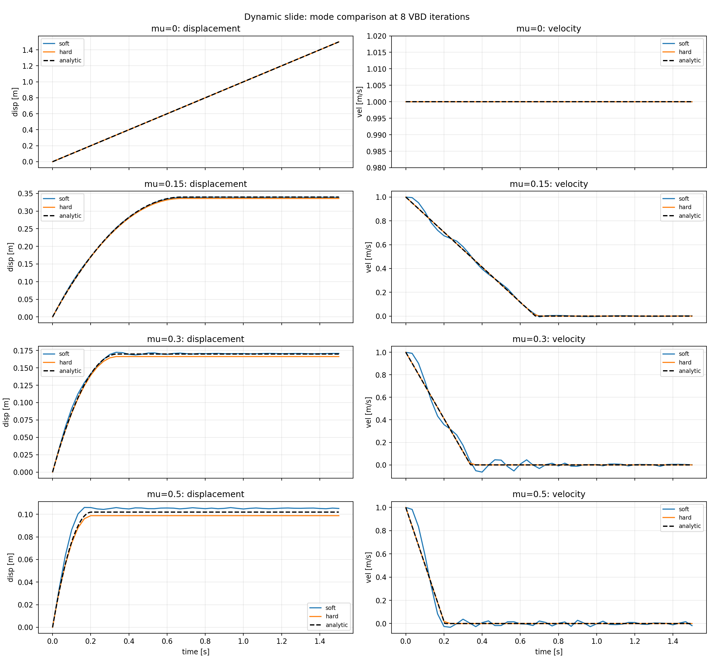
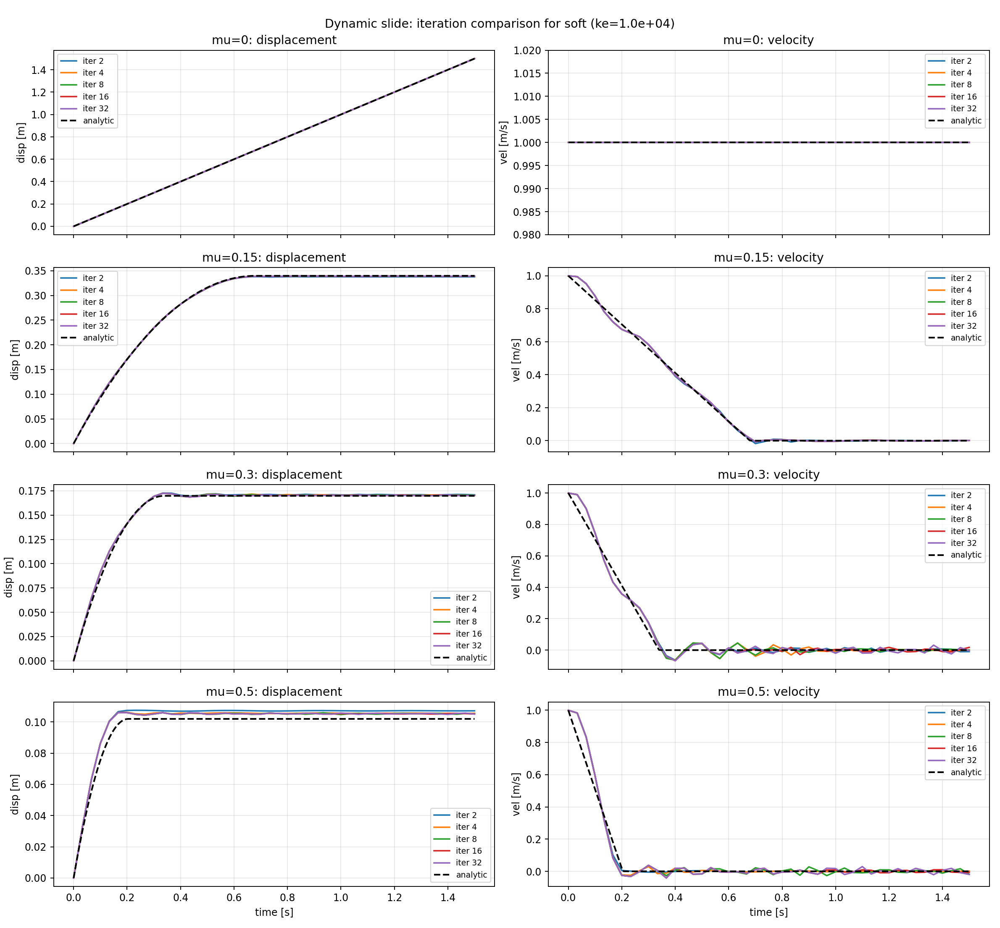
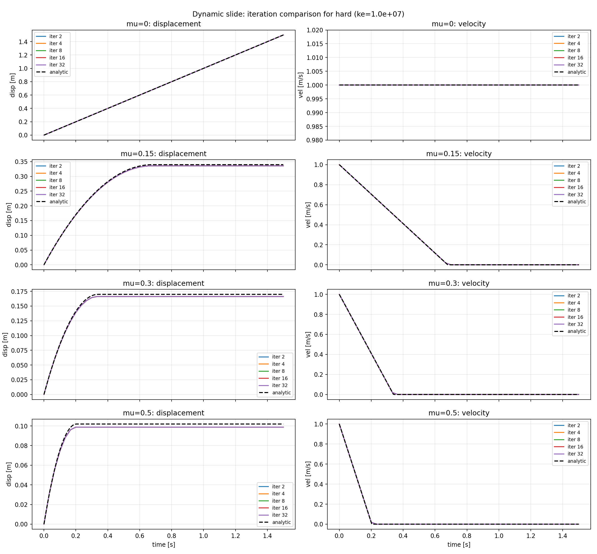

Setup
Static Ramp starts boxes at rest on ramps and checks the Coulomb
threshold: below atan(mu) they should stick, above it they
should slide.
Dynamic Ramp uses the same ramp grid with downhill initial velocity. Dynamic Slide uses flat tracks and checks horizontal stop distance against analytic Coulomb sliding.

Comparison Videos
Static Ramp
8
VBD iterations. Green should stick, red should slide, yellow is near threshold,
and magenta marks the analytic downhill position while it is still on the finite ramp.
Dynamic Ramp
Dynamic Slide
mu; the overlay reports
current position error, so the hard case's few-millimeter short stop is visible.
Result
Static Ramp.
Hard contact with
ke=1e7 gives strong static holding in this box test.
Dynamic Ramp.
The same trend appears on ramp geometry; on-ramp error is used while boxes remain on the finite ramp.
Dynamic Slide.
Soft contact gives smoother stop-distance tracking; hard stops a few millimeters short.
Static Ramp

8 VBD iterations.

Dynamic Ramp

0.85 s, before the
fastest above-threshold boxes leave the finite ramp.
Dynamic Slide

8 VBD iterations.
